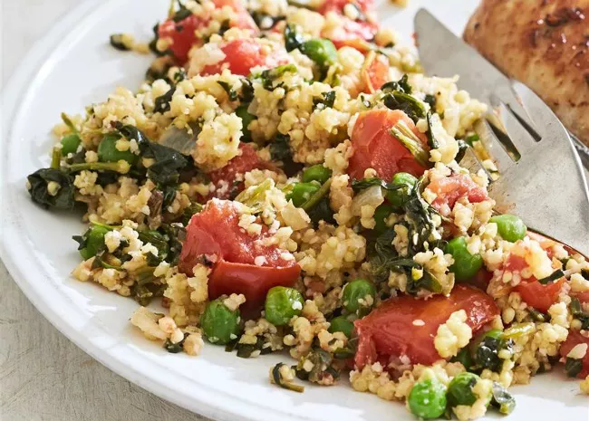

Vegetable Birdseed Pilaf

Description:
A savory vegetarian pilaf of millet with spinach, peas, onions, garlic,
and tomatoes flavored with rosemary and wine.
"I made this for my non-vegetarian friends and they loved it!" says Lori.
"I loved it too. It will be a family staple for sure."
Ingredients:
- Millet
- Spinach
- Peas
- Onions
- Garlic
- Tomatoes
- Rosemary
- Wine
Steps:
- Chop spinach, onions,tomatoes, crush garlic
- Put all the solid ingredients in a pot
- Add enough wine cover all the solid ingredients, then double it.
- Bring the wine boil on high heat
- Cook the pot, simmering boil on low heat with a lid on for 30 min